Переменные резисторы
Переменные резисторы (резисторы переменного сопротивления, потенциометры) являются пассивными элементами, сопротивление которых можно изменять от нуля и до номинального значения. Они применяются в качестве регуляторов усиления, регуляторов громкости и тембра в звуковоспроизводящей радиоаппаратуре, используются для точной и плавной настройки различных напряжений.
Устройство переменного резистора
Переменные резисторы представляют собой цилиндрический или прямоугольный корпус, внутри которого расположен резистивный элемент, выполненный в виде незамкнутого кольца, и выступающая металлическая ось (рис. 1). На конце оси закреплена пластина токосъемника (контактная щетка), имеющая надежный контакт с резистивным элементом. Надежность контакта щетки с поверхностью резистивного слоя обеспечивается давлением ползунка, выполненного из пружинных материалов, например, бронзы или стали.
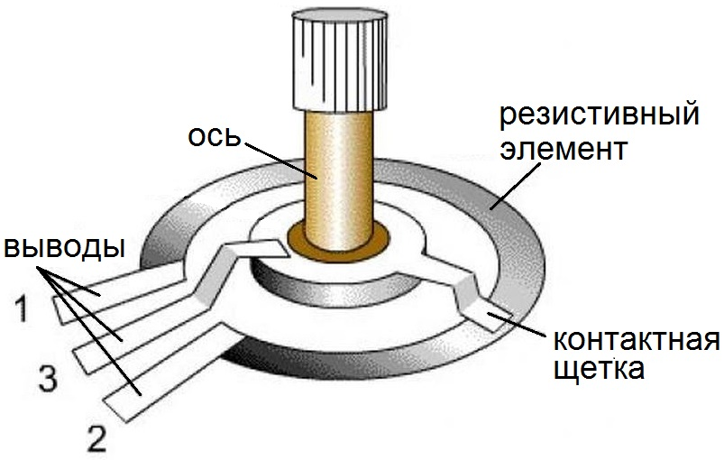
Рис. 1 - Устройство переменного резистора
Переменные резисторы, имеют два постоянных вывода и один подвижный. Постоянные выводы расположены по краям резистора и соединены с началом и концом резистивного элемента, образующим общее сопротивление потенциометра. Средний вывод соединен с подвижным контактом, который перемещается по поверхности резистивного элемента и позволяет изменять величину сопротивления между средним и любым крайним выводом.
В зависимости от резистивного элемента переменные резисторы разделяются на непроволочные и проволочные.
Принцип действия переменного резистора
При вращении ручки ползунок перемещается по поверхности резистивного элемента, в результате чего сопротивление изменяется между средним и крайними выводами. Если на крайние выводы подать напряжение, то между ними и средним выводом получают выходное напряжение. Переменный резистор работает как делитель напряжения, с той лишь разницей, что вращение ручки приводит к изменению положения контакта (2) и тем самым изменяется соотношение сопротивлений резисторов R1 и R2.
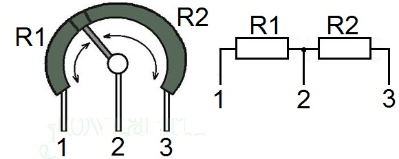
Рис. 2 - Принцип действия переменного резистора
Основные параметры переменных резисторов.
Основными параметрами резисторов являются: полное (номинальное) сопротивление, форма функциональной характеристики, минимальное сопротивление, номинальная мощность, уровень шумов вращения, износоустойчивость, параметры, характеризующие поведение резистора при климатических воздействиях, а также размеры, стоимость и т.п. Однако при выборе резисторов чаще всего обращают внимание на номинальное сопротивление и реже на функциональную характеристику.
Номинальное сопротивление
Номинальное сопротивление резистора указывается на его корпусе. Согласно ГОСТ 10318-74 предпочтительными числами являются 1,0; 2,2; 3,3; 4,7 Ом, килоом или мегаом.
У зарубежных резисторов предпочтительными числами являются 1,0; 2,0; 3,0; 5.0 Ом, килоом и мегаом.
Допускаемые отклонения сопротивлений от номинального значения установлены в пределах ±30%.
Полным сопротивлением резистора считается сопротивление между крайними выводами 1 и 3.
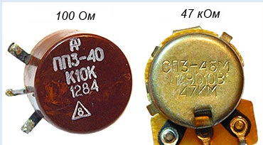
Рис. 3 - Обозначение номинального сопротивления на корпусе переменных резисторов
Форма функциональной характеристики
Потенциометры одного и того же типа могут отличаться функциональной характеристикой, определяющей по какому закону изменяется сопротивление резистора между крайним и средним выводом при повороте ручки резистора. По форме функциональной характеристики потенциометры разделяются на линейные и нелинейные: у линейных величина сопротивления изменяется пропорционально движению токосъемника, у нелинейных она изменяется по определенному закону.
Существуют три основных закона (рис. 4):
А — Линейный,
Б – Логарифмический,
В — Обратно Логарифмический (Показательный).
Например, для регулирования громкости в звуковоспроизводящей аппаратуре необходимо, чтобы сопротивление между средним и крайним выводом резистивного элемента изменялось по обратному логарифмическому закону (В). Только в этом случае наше ухо способно воспринимать равномерное увеличение или уменьшение громкости.
Или в измерительных приборах, например, генераторах звуковой частоты, где в качестве частотозадающих элементов используются переменные резисторы, также требуется, чтобы их сопротивление изменялось по логарифмическому (Б) или обратному логарифмическому закону. И если это условие не выполнить, то шкала генератора получится неравномерной, что затруднит точную установку частоты.
Резисторы с линейной характеристикой (А) применяются в основном в делителях напряжения в качестве регулировочных или подстроечных.
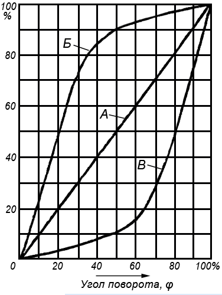
Рис. 4 - График функциональных характеристик переменных резисторов
Для получения нужной функциональной характеристики большие изменения в конструкцию потенциометров не вносятся. Так, например, в проволочных резисторах намотку провода ведут с изменяющимся шагом или сам каркас делают изменяющейся ширины. В непроволочных потенциометрах меняют толщину или состав резистивного слоя.
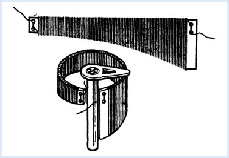
Рис. 5 - Вариант конструкции резистивного элемента
Регулируемые резисторы имеют относительно невысокую надежность и ограниченный срок службы. При эксплуатации аудиоаппаратуры, приходится слышать шорохи и треск из громкоговорителя при вращении регулятора громкости. Причиной этого является нарушение контакта щетки с токопроводящим слоем резистивного элемента или износ последнего. Скользящий контакт является наиболее ненадежным и уязвимым местом переменного резистора и является одной из главной причиной выхода детали из строя.
Обозначение переменных резисторов на схемах
На принципиальных схемах переменные резисторы обозначаются также как и постоянные, только к основному символу добавляется стрелка, направленная в середину корпуса. Стрелка обозначает регулирование и одновременно указывает, что это средний вывод (рис. 6).
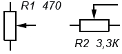
Рис. 6 - Обозначение переменных резисторов на электрических схемах
Иногда возникают ситуации, когда к переменному резистору предъявляются требования надежности и длительности эксплуатации. В этом случае плавное регулирование заменяют ступенчатым, а переменный резистор строят на базе переключателя с несколькими положениями. К контактам переключателя подключают резисторы постоянного сопротивления, которые будут включаться в цепь при повороте ручки переключателя. И чтобы не загромождать схему изображением переключателя с набором резисторов, указывают только символ переменного резистора со знаком ступенчатого регулирования. А если есть необходимость, то дополнительно указывают и число ступеней.
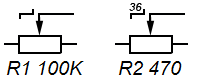
Рис. 7 - Обозначение ступенчатого регулирования
Для регулирования громкости и тембра, уровня записи в звуковоспроизводящей стереофонической аппаратуре, для регулирования частоты в генераторах сигналов и т.д. применяются сдвоенные потенциометры, сопротивления которых изменяется одновременно при повороте общей оси (движка). На схемах символы входящих в них резисторов располагают как можно ближе друг к другу, а механическую связь, обеспечивающую одновременное перемещение движков, показывают либо двумя сплошными линиями, либо одной пунктирной линией.
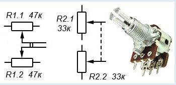
Рис. 8 - Обозначение сдвоенных переменных резисторов
Принадлежность резисторов к одному сдвоенному блоку указывается согласно их позиционному обозначению в электрической схеме, где R1.1 является первым по схеме резистором сдвоенного переменного резистора R1, а R1.2 — вторым. Если же символы резисторов окажутся на большом удалении друг от друга, то механическую связь обозначают отрезками пунктирной линии.
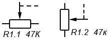
Рис. 9 - Обозначение механической связи сдвоенных переменных резисторов
Промышленностью выпускаются сдвоенные переменные резисторы, у которых каждым резистором можно управлять отдельно, потому что ось одного проходит внутри трубчатой оси другого. У таких резисторов механическая связь, обеспечивающая одновременное перемещение, отсутствует, поэтому на схемах ее не показывают, а принадлежность к сдвоенному резистору указывают согласно позиционному обозначению в электрической схеме.
В переносной бытовой аудиоаппаратуре часто используют переменные резисторы со встроенным выключателем, контакты которого задействуют для подачи питания в схему устройства. У таких резисторов переключающий механизм совмещен с осью (ручкой) переменного резистора и при достижении ручкой крайнего положения воздействует на контакты.
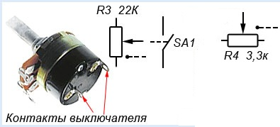
Рис. 10 - Обозначение переменных резисторов со встроенным выключателем
Как правило, на схемах контакты включателя располагают возле источника питания в разрыв питающего провода, а связь выключателя с резистором обозначают пунктирной линией и точкой, которую располагают у одной из сторон прямоугольника. При этом имеется в виду, что контакты замыкаются при движении от точки, а размыкаются при движении к ней.
Типы переменных резисторов
Таблица 1
| Тип | Описание | Применение |
|---|---|---|
| Однооборотные 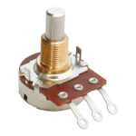 |
Вращение движка осуществляется на один оборот (примерно 270 градусов или 3/4 полного оборота) | Наиболее часто такие потенциометры используется в устройствах, где одного оборота вполне достаточно для осуществления регулировки. |
| Многооборотные 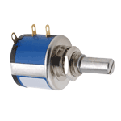 |
Движок резистора может совершать несколько оборотов (в основном 5, 10 или 20) для повышения точности. В них, как правило, резистивный элемент имеет спиральную или винтовую форму. | Они используется там, где требуется высокая точность и разрешение. Многооборотные потенциометры часто используются в качестве подстроечных резисторов на печатной плате. |
| Сдвоенные 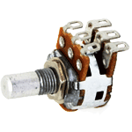 |
Сочетает в себе два отдельных резистора на одном валу, что позволяет осуществлять параллельную регулировку двух каналов. Наиболее распространены потенциометры с линейным и логарифмическим сопротивлением. | Используется, например, в стерео регуляторах громкости аудио или других устройствах, где необходимо одновременно отрегулировать сразу два независимых канала. |
|
Ползунковый потенциометр 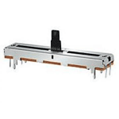 |
Одинарный ползунковый линейный потенциометр предназначен в основном для аудио устройств. Высококачественные резисторы часто изготавливают из проводящего пластика. | Для одного канала |
|
Двойной ползунковый потенциометр 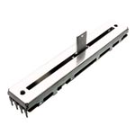 |
Двойной потенциометр, так же как и сдвоенный оборотный потенциометр позволяет регулировать два независимых канала. | Часто используется для управления стерео в профессиональной аудиосистеме и других устройствах, где необходимо управлять двумя каналами одновременно. |
|
Многооборотный ползунковый потенциометр 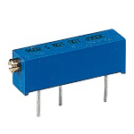 |
Имеет шпиндель, который переводит вращательное движение в поступательное линейное перемещение движка потенциометра по резистивному элементу. | Используется там, где требуется высокая точность и разрешение. Многооборотный ползунковый потенциометр используются в качестве подстроичника на печатной плате, но не так часто, как поворотный многооборотный. |
Непроволочные переменные резисторы
В непроволочных переменных резисторах резистивный элемент выполнен в виде подковообразной или прямоугольной пластины из изоляционного материала, на поверхность которых нанесен резистивный слой, обладающий определенным омическим сопротивлением.
Резисторы с подковообразным резистивным элементом имеют круглую форму и вращательное перемещение ползунка с углом поворота 230 — 270°, а резисторы с прямоугольным резистивным элементом имеют прямоугольную форму и поступательное перемещение ползунка. Наиболее популярными являются резисторы типа СП, ОСП, СПЕ и СП3. На рисунке 11 показан переменный резистор типа СП3-4 с подковообразным резистивным элементом.
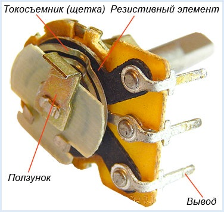
Рис. 11 - Непроволочный переменный резистор
Отечественной промышленностью выпускались переменные резисторы типа СПО (рис. 12), у которых резистивный элемент впрессован в дугообразную канавку. Корпус такого резистора выполнен из керамики, а для защиты от пыли, влаги и механических повреждений, а также в целях электрической экранировки весь резистор закрывается металлическим колпачком.
Переменные резисторы типа СПО обладают большой износостойкостью, нечувствительны к перегрузкам и имеют небольшие размеры, но у них есть недостаток – сложность получения нелинейных функциональных характеристик. Эти резисторы до сих пор еще можно встретить в старой отечественной радиоаппаратуре.
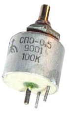
Рис. 12 - Переменный резистор типа СПО
Проволочные переменные резисторы
В проволочных переменных резисторах (рис. 13) сопротивление создается высокоомным проводом, намотанным в один слой на кольцеобразном каркасе, по ребру которого перемещается подвижный контакт. Для получения надежного контакта между щеткой и обмоткой контактная дорожка зачищается, полируется, или шлифуется на глубину до 0,25d.
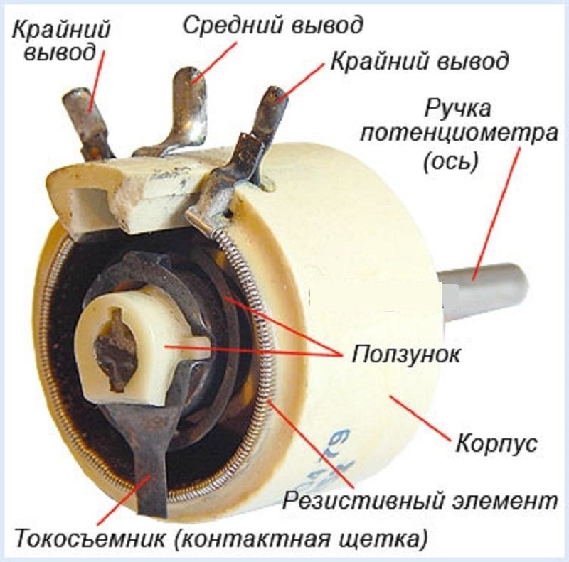
Рис. 13 - Устройство проволочного переменного резистора
Устройство и материал каркаса определяется исходя из класса точности и закона изменения сопротивления резистора . Каркасы изготавливают из пластины, которую после намотки провода сворачивают в кольцо, или же берут готовое кольцо, на которое укладывают обмотку.
Для резисторов с точностью, не превышающей 10...15%, каркасы изготавливают из пластины, которую после намотки провода сворачивают в кольцо. Материалом для каркаса служат изоляционные материалы, такие как гетинакс, текстолит, стеклотекстолит, или металл – алюминий, латунь и т.п. Такие каркасы просты в изготовлении, но не обеспечивают точных геометрических размеров.
Каркасы из готового кольца изготавливают с высокой точностью и применяют в основном для изготовления переменных резисторов. Материалом для них служит пластмасса, керамика или металл, но недостатком таких каркасов является сложность выполнения обмотки, так как для ее намотки требуется специальное оборудование.
Обмотку выполняют проводами из сплавов с высоким удельным электрическим сопротивлением, например, константан, нихром или манганин в эмалевой изоляции. Для переменных резисторов применяют провода из специальных сплавов на основе благородных металлов, обладающих пониженной окисляемостью и высокой износостойкостью. Диаметр провода определяют исходя из допустимой плотности тока.
Подстроечные резисторы
Подстроечные резисторы являются разновидностью переменных и служат для разовой и точной настройки радиоэлектронной аппаратуры в процессе ее монтажа, наладки или ремонта. В качестве подстроечных используют как переменные резисторы обычного типа с линейной функциональной характеристикой, ось которых выполнена «под шлиц» и снабжена стопорным устройством, так и резисторы специальной конструкции с повышенной точностью установки величины сопротивления.
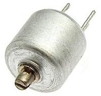
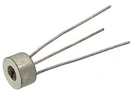
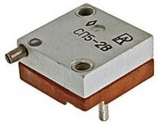
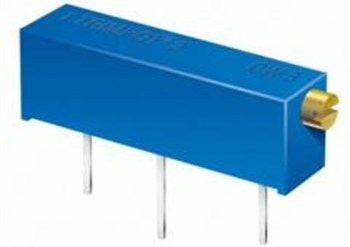
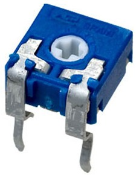
Рис. 14 - Подстроечные резисторы
В основной своей массе подстроечные резисторы специальной конструкции изготавливают прямоугольной формы с плоским или кольцевым резистивным элементом. Резисторы с плоским резистивным элементом (рис. 15,а) имеют поступательное перемещение контактной щетки, осуществляемое микрометрическим винтом. У резисторов с кольцевым резистивным элементом (рис. 15,б) перемещение контактной щетки осуществляется червячной передачей.
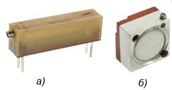
Рис. 15 - Подстроечные резисторы специальной конструкции (многооборотные)
При больших нагрузках используются открытые цилиндрические конструкции резисторов, например, ПЭВР.
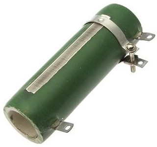
Рис. 16 - Мощный подстроечный резистор типа ПЭВР
На принципиальных схемах подстроечные резисторы обозначаются также как и переменные, только вместо знака регулирования используется знак подстроечного регулирования.
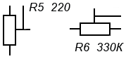
Рис. 17 - Условное графическое обозначение подстроечного резистора
Включение переменных резисторов в электрическую цепь.
В электрических схемах переменные резисторы могут применяться в качестве реостата (регулятора тока) или в качестве потенциометра (делителя напряжения). Если в электрической цепи необходимо регулировать ток, то резистор включают реостатом, если напряжение, то включают потенциометром.
При включении резистора реостатом задействуют средний и один крайний вывод. Однако такое включение не всегда предпочтительно, так как в процессе регулирования возможна случайная потеря средним выводом контакта с резистивным элементом, что повлечет за собой нежелательный разрыв электрической цепи и, как следствие, возможный выход из строя детали или электронного устройства в целом.
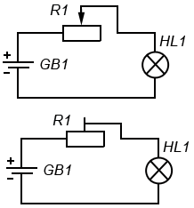
Рис. 18 - Включение переменного резистора реостатом (вариант 1)
Чтобы исключить случайный разрыв цепи свободный вывод резистивного элемента соединяют с подвижным контактом, чтобы при нарушении контакта электрическая цепь всегда оставалась замкнута.
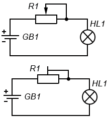
Рис. 19 - Включение переменного резистора реостатом (вариант 2)
На практике включение реостатом применяют тогда, когда хотят переменный резистор использовать в качестве добавочного или токоограничивающего сопротивления.
При включении резистора потенциометром задействуются все три вывода, что позволяет его использовать делителем напряжения. Возьмем, к примеру, переменный резистор R1 с таким номинальным сопротивлением, которое будет гасить практически все напряжение источника питания, приходящее на лампу HL1. Когда ручка резистора выкручена в крайнее верхнее по схеме положение, то сопротивление резистора между верхним и средним выводами минимально и все напряжение источника питания поступает на лампу, и она светится полным накалом.
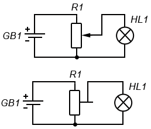
Рис. 20 - Включение переменного резистора делителем напряжения
По мере перемещения ручки резистора вниз сопротивление между верхним и средним выводом будет увеличиваться, а напряжение на лампе постепенно уменьшаться, отчего она станет светить не в полный накал. А когда сопротивление резистора достигнет максимального значения, напряжение на лампе упадет практически до нуля, и она погаснет. Именно по такому принципу происходит регулирование громкости в звуковоспроизводящей аппаратуре.
Эту же схему делителя напряжения можно изобразить по-другому, где переменный резистор заменяется двумя постоянными R1 и R2.
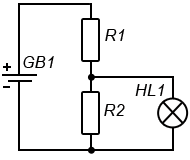
Рис. 21 - Схема делителя напряжения
Источники:
sesaga.ru - Резистор. Резисторы переменного сопротивления
joyta.ru - Что такое потенциометр?
Литература:
- В. А. Волгов — «Детали и узлы радиоэлектронной аппаратуры», 1977 г.
- В. В. Фролов — «Язык радиосхем», 1988 г.
- М. А. Згут — «Условные обозначения и радиосхемы», 1964 г.